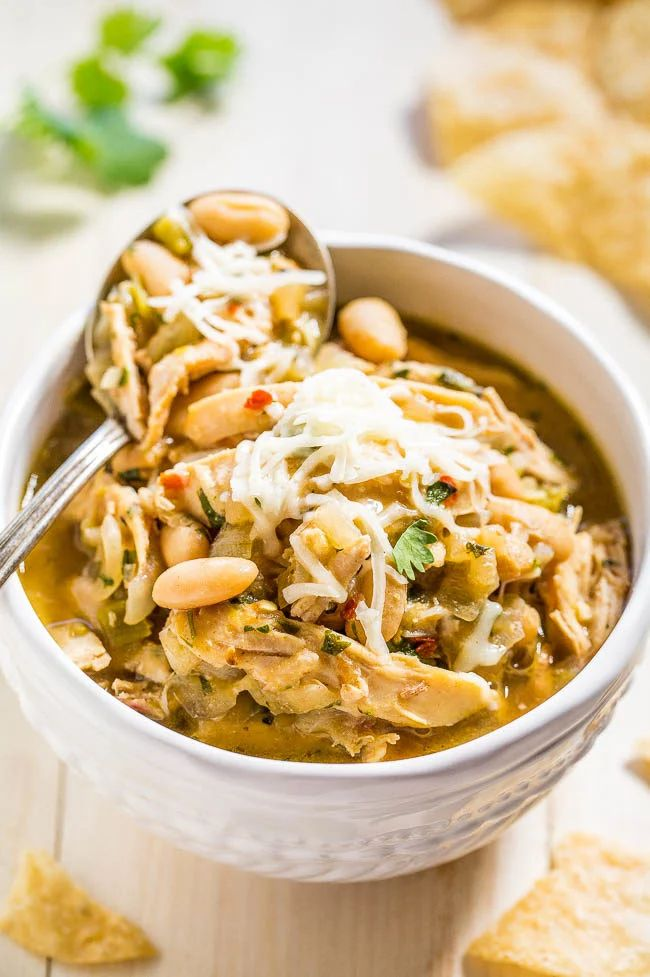

White Chicken Chili

- Meal
- Dinner
- Serves
- 8
- Protein
- chicken
- Cook
- stovetop · 15 min active / 40 min total · easy
- Make-ahead / leftovers
- yes / yes
- Mediterranean
- no
- WW tier
- light
- Status
- Trying out (probation)
Lighter alternative to the beef Chili — same comfort format, more legumes, less red meat.
Ingredients
- 1 lb chicken (rotisserie or cooked from frozen works great)
- 2 cans white cannellini beans, drained
- 1 can white corn, drained
- 2 cans diced green chiles (mild — kid-friendly heat)
- 1 packet taco seasoning
- 32 oz chicken broth
- 1 tablespoon olive oil
- 1 onion, diced
- 2 cloves garlic, minced
Method
- Sauté onion and garlic in olive oil until soft.
- Add chicken broth, green chiles, corn, taco seasoning, and chicken.
- Stir in beans. Mash one half-can of beans before adding for a thicker consistency.
- Simmer 15–20 minutes.
Serving suggestions
Tortilla chips, shredded cheese, sour cream, avocado.
Notes
- Rotisserie chicken makes this a 20-minute meal.
- Freezes well — make a double batch with Turkey Chili on the same weekend.
- Counts toward both legumes appearances in the weekly quota.